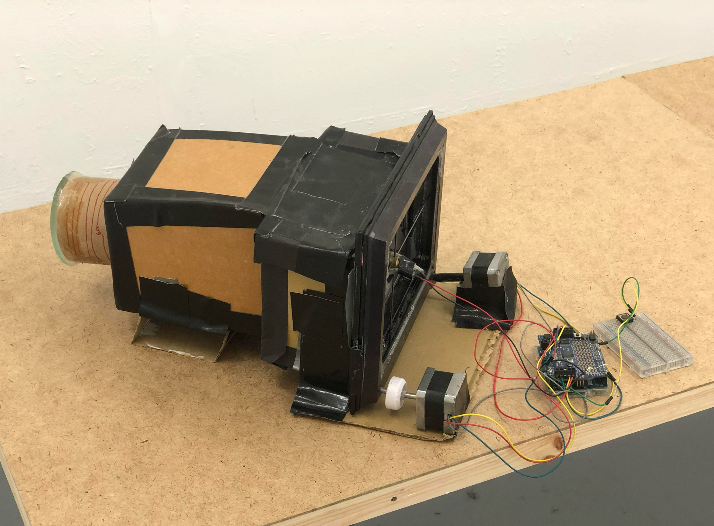

A lot of my practice photographically consisted of building cameras, I wanted to build a digital camera using my skills in physical computing combined with my photographic knowladge. I knew i wanted to create a camera capable of high resolutions but did not want to have to set up a huge array of light dependant reistors, so I came up with a noval idea to use just one LDR and move it across the camera back. Using an old Etch'a'Sketch as a base, combinded with two servo stepper motors I created a 2 axis CNC machine. you can see the camera back here.
">
I then attached a single light dependent resistor to the head of the CNC machine, and placed this in the back of a home made camera obscra, the light dependant resistor then moves across the focal plane of the camera, the light values for each point on the path of the resistor are stored and then reconsitituted into an image using a javascript program.

The resultant image is a sort of single spiral line of the LDR as it traces its way across the image, you can see a self portrait taken with the camera below. The project was picked up by FAD magazine and was exhibited in MARYLAND STUDIO as part of a photography fair for promsing up and coming artists.